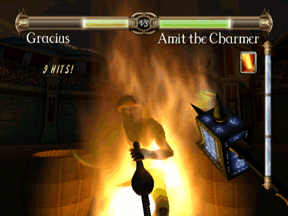

Dans ce jeu, le système de combos représente un moyen d'enchaîner des coups d'une puissance dévastatrice contre votre ennemi, en utilisant l'énergie emmagasinée pour jeter des sorts et exécuter des attaques physiques expertes.

Invoquez un pilier de feu sur votre ennemi.

Jetez-vous un sort de guérison.
Cependant, ce n'est qu'un bref aperçu. Prouvez votre valeur dans l'arène et vous obtiendrez des coups de grâce dévastateurs tels que l'éclair sauvage ou le météore ardent.
Exécuter les combos
Pour exécuter une combo, vous devez d'abord éviter l'ennemi, puis le frapper avec votre bouclier. Pour sélectionner une combo différente, appuyez sur le bouton A ou le bouton B selon la configuration des contrôles.
Jauge d'énergie
Pour exécuter une combo, vous avez besoin d'une certaine quantité d'énergie dans votre jauge d'énergie. Vous obtenez de l'énergie lorsque vos coups touchent au but et vous en perdez lorsque vous êtes touché. Les combos plus puissantes nécessitent plus d'énergie, et certaines combos vident même toute votre réserve énergie d'un coup !
1 - Jauge niveau 1
2 - Jauge niveau 2
3 - Jauge niveau 3